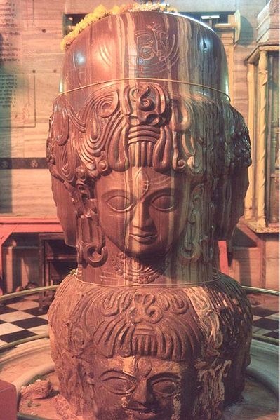

About Shri Pasupathinath

The Story behind the Shivalinga
One of the most intriguing aspects of the Pashupatinath Temple is the sacred Shivalinga enshrined within its
sanctum sanctorum. According to legends of Hindu mythology, the story of the Shivalinga's discovery holds great
significance. It is said that during the reign of the Aulikar dynasty in the 6th or 7th century, a cowherd named
Punya Dasa was grazing his cattle near the banks of the Shivna River. As he went about his daily chores, he
stumbled upon a remarkable sight - a divine Shivalinga emerging from the waters.
Overwhelmed by this divine discovery, Punya Dasa realized the sacredness of the Shivalinga and immediately
established a shrine at the site. The shrine eventually transformed into the magnificent Pashupatinath Temple we
see today. The idol was installed on a momentous Monday, a day that holds special significance in Hindu
mythology. This day of the Shivalinga's incarnation is celebrated as a vibrant Mela in the surrounding area,
drawing devotees from far and wide to partake in the festivities.
A Virtual Tour
Weighing 4600 kilograms and rising 7.25 feet in a graceful curvature, the Shivalinga reaches a towering height of
11.25 feet in a straight line. Adorned atop this majestic structure are eight heads, divided into two parts. The top
four heads radiate clarity, refinement, and completeness, while the lower four heads maintain a raw and untamed
essence. Approaching the temple, one is drawn to its four doors, each facing a different direction. The entrance
door, situated in the west, welcomes visitors into its sacred space.
Inside, the heads positioned in the western section depict a fearsome image of Lord Shiva. Their make-up showcases a
trio of relishes represented by bun-shaped hair adorned with venomous snakes, an all-seeing third eye, and an open
expression symbolizing wisdom and transcendence.
The Current Temple Premises
Today, the Pashupatinath Temple stands as a testament to the architectural brilliance of the past and the vibrant
spiritual traditions that continue to thrive. The temple premises have been meticulously maintained, offering a
serene environment for devotees and visitors. The pathways leading to the temple are lined with lush greenery and
vibrant flowers, creating an atmosphere of natural beauty and serenity.